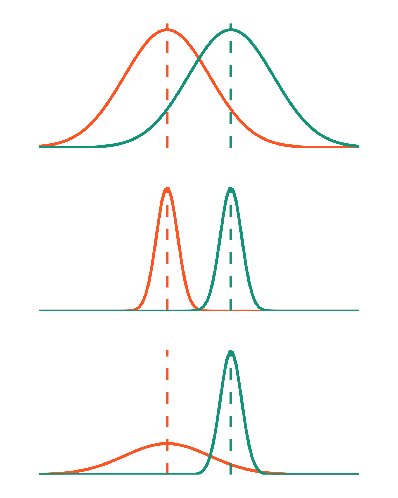

Code
library(tidyverse)
library(patchwork)
small <- ggplot(data.frame(x = -6:9), aes(x)) +
stat_function(geom = "line", n = 100, fun = dnorm, args = list(mean = 0, sd = 2), linewidth = 2, color = "#FF6B2B") +
geom_vline(aes(xintercept = 0), color = "#FF6B2B", lty = 2, linewidth = 2) +
stat_function(geom = "line", n = 100, fun = dnorm, args = list(mean = 3, sd = 2), linewidth = 2, color = "#00A38D") +
geom_vline(aes(xintercept = 3), color = "#00A38D", lty = 2, linewidth = 2) +
scale_y_continuous(expand = c(0, 0), limits = c(0, 0.21)) +
theme_void() +
theme(plot.margin = unit(c(1, 1, 1, 1), "cm"))
big <- ggplot(data.frame(x = -6:9), aes(x)) +
stat_function(geom = "line", n = 100, fun = dnorm, args = list(mean = 0, sd = 0.5), linewidth = 2, color = "#FF6B2B") +
geom_vline(aes(xintercept = 0), color = "#FF6B2B", lty = 2, linewidth = 2) +
stat_function(geom = "line", n = 100, fun = dnorm, args = list(mean = 3, sd = 0.5), linewidth = 2, color = "#00A38D") +
geom_vline(aes(xintercept = 3), color = "#00A38D", lty = 2, linewidth = 2) +
scale_y_continuous(expand = c(0, 0), limits = c(0, 0.8)) +
theme_void() +
theme(plot.margin = unit(c(1, 1, 1, 1), "cm"))
unequal <- ggplot(data.frame(x = -6:9), aes(x)) +
stat_function(geom = "line", n = 100, fun = dnorm, args = list(mean = 0, sd = 2), linewidth = 2, color = "#FF6B2B") +
geom_vline(aes(xintercept = 0), color = "#FF6B2B", lty = 2, linewidth = 2) +
stat_function(geom = "line", n = 100, fun = dnorm, args = list(mean = 3, sd = 0.5), linewidth = 2, color = "#00A38D") +
geom_vline(aes(xintercept = 3), color = "#00A38D", lty = 2, linewidth = 2) +
scale_y_continuous(expand = c(0, 0), limits = c(0, 0.8)) +
theme_void() +
theme(plot.margin = unit(c(1, 1, 1, 1), "cm"))
small/big/unequal